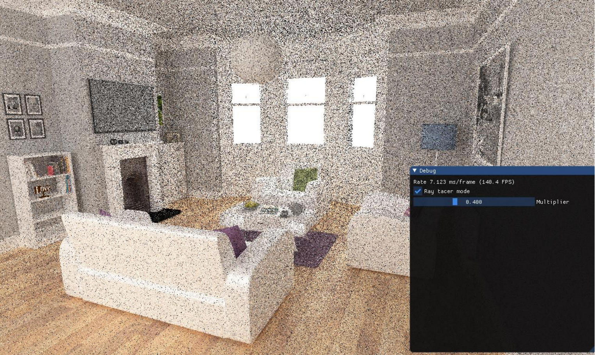
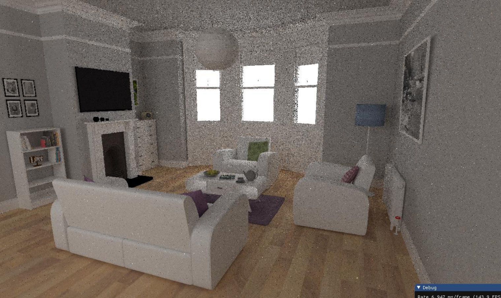
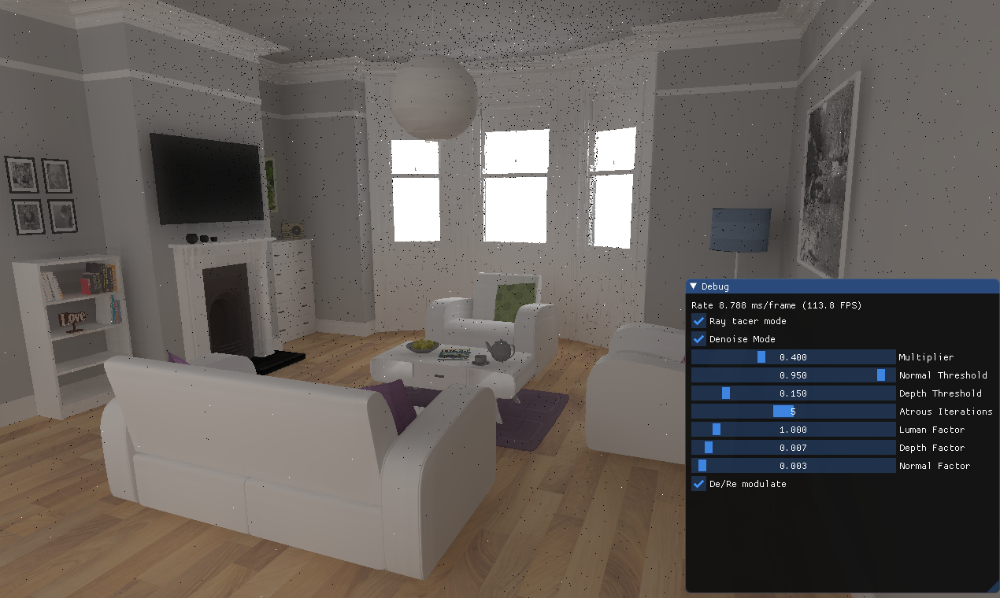

Vulkan Ray Tracer
In Digipen Senior year, I made an Vulkan GPU ray tracing project.
The first milestone, I implemented accumulating ray tracing data if camera does not move. Depending on the flag passed by Push Constants, it determines accumulating data from whether previous frame or not.
The second milestone, I managed light connections. It had ray generate shader, ray closest hit shader, and ray miss shader. It starts from the ray generate shader and proceed the ray closest shader or ray miss shader.
The third milestone, I applied edge avoiding A-Trous filter to denoise the image. It simply iterates and merge neighbors color data based on normal vector on the color.
Ray tracer mode is the flag to toggle ray tracer mode or ray caster mode. Denoise Mode is the flag to toggle A-Trous filter. Multiplier is an obsolete parameter. Normal and Depth Threshold is denoise parameters to determine whether include the color or not. Atrous Iterations is the number of iterations to conduct the denoise algorithm. Lumen, Depth, Normal factors are denoise parameters to how much affect the previous data.